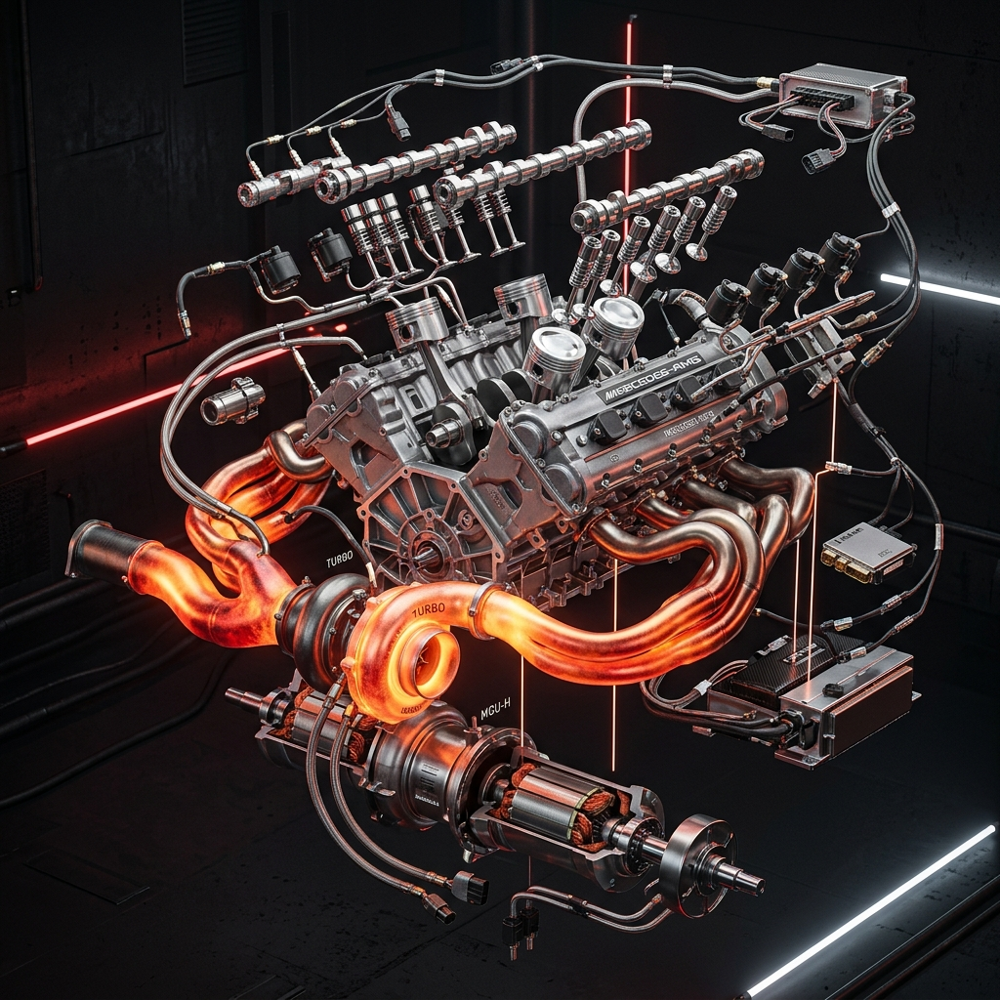
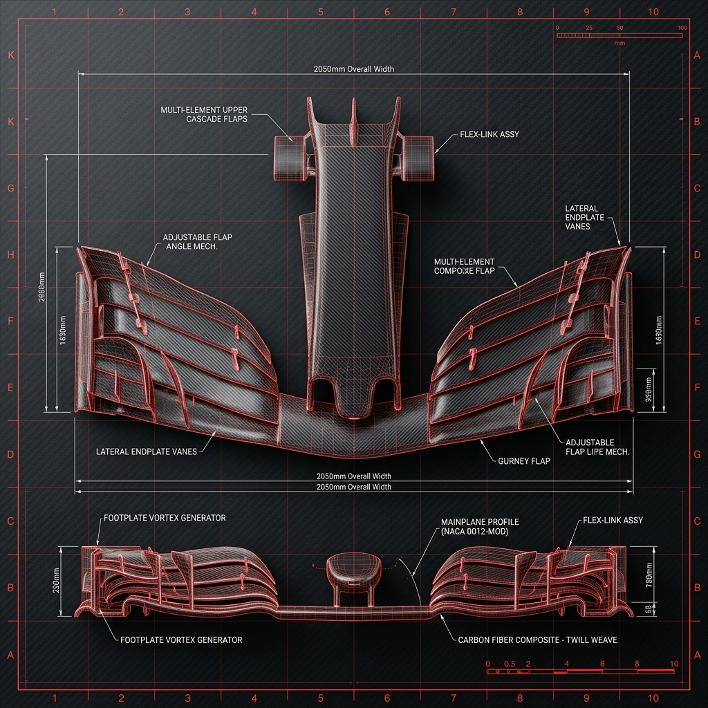
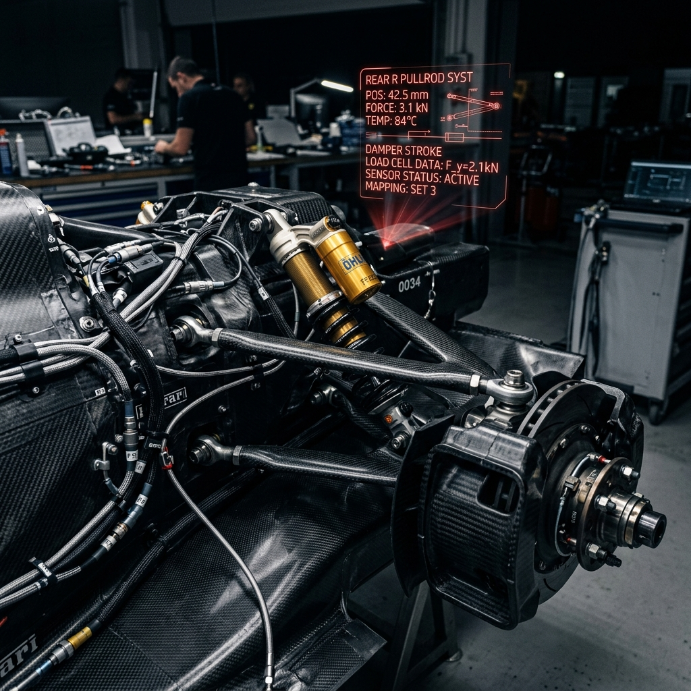
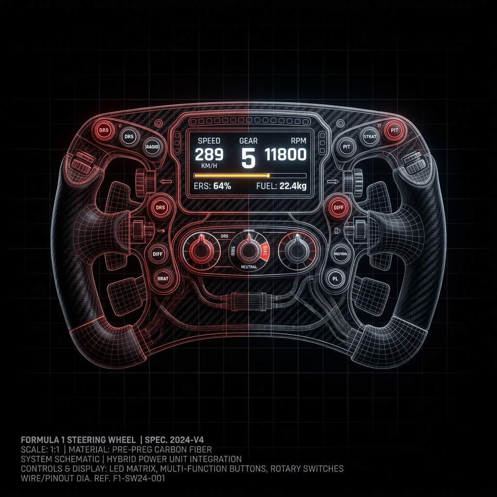

Especialista en sistemas de propulsión y telemetría avanzada. Optimizando cada milisegundo para los equipos líderes del paddock global.
Consultoría especializada para equipos de motorsport, fabricantes OEM y proyectos de alta performance.
Ingeniería de componentes críticos bajo cargas extremas. FEA, optimización topológica y validación en banco de pruebas.
Desarrollo de unidades motrices híbridas, calibración de mapa de motor y gestión térmica bajo regulaciones FIA.
Análisis de telemetría en tiempo real, correlación simulador-pista y estrategia de carrera basada en datos.




Visualiza los momentos clave del último Gran Premio [GP_MONACO]. Datos técnicos y acción pura.
Ingeniero mecánico de élite con especialización en sistemas de propulsión de alta performance. Con una profunda trayectoria en el paddock de la Fórmula 1, he liderado proyectos de optimización de unidades de potencia híbridas y desarrollo aerodinámico avanzado, fusionando el análisis de datos de telemetría de precisión con un diseño industrial de vanguardia. Mi enfoque se centra en desafiar los límites físicos para alcanzar la máxima eficiencia competitiva.
Análisis masivo de datos históricos para identificar cuellos de botella mediante CFD y simulaciones de banco.
Modelado de componentes críticos y validación estructural bajo cargas de fatiga extrema y Gforce.
Optimización en tiempo real basada en el feedback de pista y correlación con el simulador del equipo.
Disponible para proyectos de consultoría, desarrollo técnico y colaboraciones con equipos de motorsport a nivel internacional.